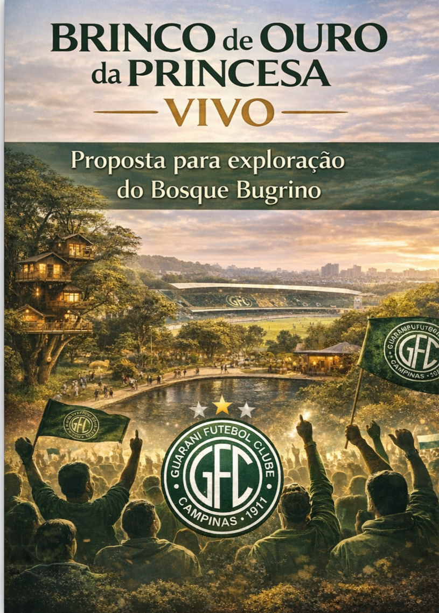

🎯 BRINCO VIVO O Renascimento do Coração de Campinas
📍 Um novo propósito para o Brinco de Ouro Com a construção interligação bosque-estádio, o Guarani tem a chance de transformar o Brinco em algo ainda maior: Um patrimônio histórico vivo, que une memória, natureza e inovação urbana — tudo no coração da cidade.
💡 A VISÃO Transformar o estádio e seu bosque em um complexo sustentável e cultural, gerando renda contínua para o clube, revitalizando uma área nobre e criando um espaço de bem-estar e convivência para a população.
🧱 ESTRUTURA DO “BRINCO VIVO” 🏟️ 🌳 🧘 🐾 💧 ☕
Zona
Conteúdo Museu interativo + instalação “Relógio Vivo” com momentos Memorial do Guarani históricos Bosque Sensorial Trilha, natureza preservada, espaços de leitura, eventos culturais Arquitetura integrada à natureza, salas de trabalho, terapias e Espaço Coworking & Spa relaxamento Convivência com animais, oficinas de leite/queijo, espaço Espaço Pet & Microfazenda educativo Exploração sustentável do Aquífero Guarani, parceria com Estação Ambiental universidades Vila Urbana Cafeteria conceito, livraria, eventos, loja oficial do Guarani
💰 IMPACTO ECONÔMICO E SOCIAL • Rentabilidade estimada: R$ 150 mil/mês em 3 anos • Potencial de público: +1 milhão de visitantes/ano • Incentivo à cultura, saúde e economia local • Revitalização de área subutilizada e valorização do entorno • Tombamento do estádio = preservação histórica e isenção fiscal
📣 CHAMADA FINAL O Brinco de Ouro não será demolido. Ele será revivido como o primeiro espaço urbano de cultura, natureza e memória no coração de Campinas. Um projeto sustentável, rentável e inspirador – pronto para virar símbolo da cidade novamente.
📞 Contato direto:
Ricardo B. Chiarini ricardo@osinvictos.com.br / +55 (19) 98810.8063 https://linkedin.com/in/rirotoysport/